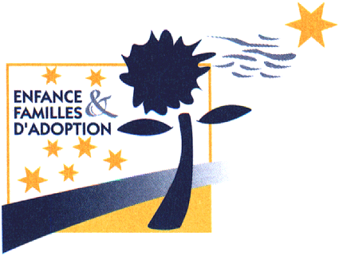
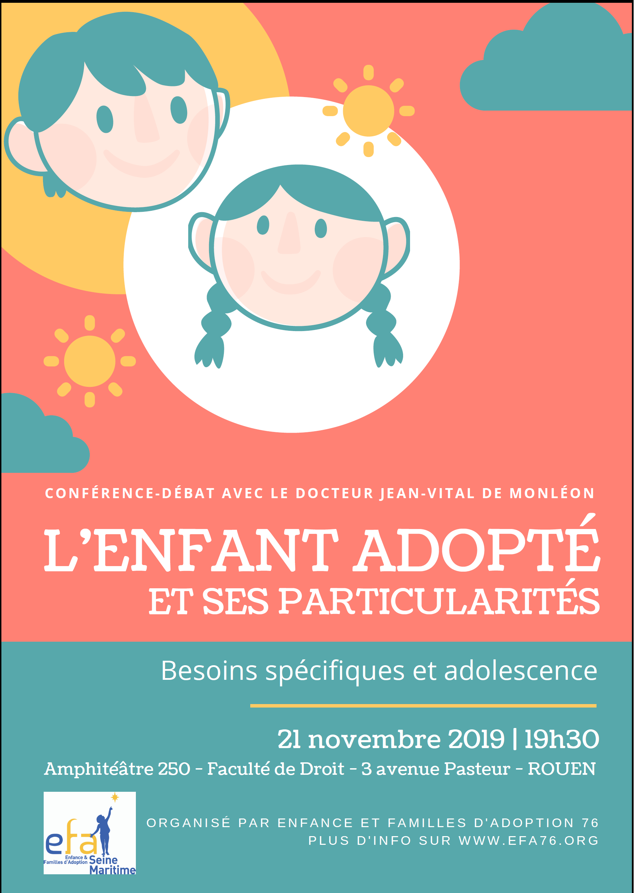

Le mot de la présidente


Chers adhérents,
L’année 2019-2020 s’annonce bien remplie, puisque de nouvelles activités vont voir le jour, avec plus de rendez-vous ludiques pour les familles avec jeunes enfants, plus de propositions à destination des familles avec adolescents, plus d’évènements préparant ou soutenant la parentalité adoptive. Votre participation à ces évènements compte beaucoup par l’enrichissement mutuel qu’elle procure. C’est aussi grâce à votre soutien que l'association vit et remplit sa mission : préparer et guider les candidats à l’adoption, soutenir les adoptants dans leur parentalité, les adoptés dans leurs interrogations, et fournir des informations sur l’adoption. Enfin, EFA 76 a vocation à favoriser le lien entre adhérents grâce à des contacts réels, des échanges en personne, et du temps partagé. C’est une aventure collective, portée par la fierté d’être bénévoles au service de l’adoption. Tous ensemble, unissons nos énergies pour faire rayonner l’adoption !
Coralie COURTAIGNE-DESLANDES
16 octobre 2019


 CONFERENCE
CONFERENCE
Conférence-débat avec le docteur Jean-Vital de Monléon : L'enfant adopté et ses particularités

Inscriptions et billetterie helloasso sur
Pour nous contacter : efa76.asso@gmail.com
Jean-Vital de Monléon est un pédiatre et un anthropologue, spécialiste de l'adoption, membre du Conseil National de la Protection de l'Enfance, ancien membre du Conseil Supérieur de l'Adoption.
Il est l'auteur de nombreux ouvrages :
- Les Deux Mamans de Petirou, illustré par Rebecca Dautremer (éditions Gautier-Languereau, 2001).
- Naître là-bas, grandir ici (éditions Belin 2003).
- Pédiatrie avec Frédéric Huet et Jean-Paul Belon (éditions Masson, 1999).
- Jean-Vital de Monléon, « L’adoption en Polynésie française et les métropolitains : de la stupéfaction à la participation », dans Isabelle Leblic, De l’adoption : Des pratiques de filiation différentes (Presses Universitaires Blaise Pascal, coll. « Anthropologie », 2004, p. 49-79)
- N'oublions pas les enfants avec Anne Coutures (éditions Presses de la Renaissance, 2015).
- L'enfant adopté, préface de Jean-François Mattéi (éditions John Libbey, 2017)
Il tient également un blog : http://leblogdeladoption.blogspot.com/